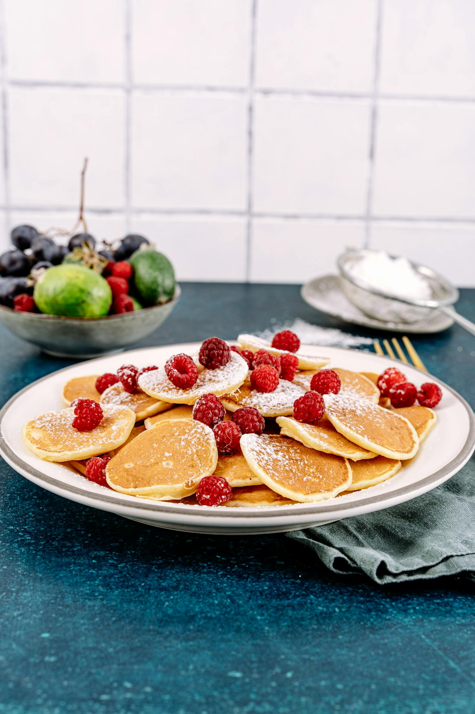

Cottage Cheese Pancakes
Back to Home page

Description
Cottage Cheese Pancakes are fluffy, protein-packed breakfast treats made by blending cottage cheese with eggs, oats or flour, and simple add-ins like vanilla or baking powder.
Key Features
They yield thick, tender pancakes with a subtle tangy richness from the cheese, often requiring just 3-4 ingredients and a quick blender mix before pan-frying. High in protein (around 15-20g per serving), they're naturally gluten-free adaptable and pair well with fruits or syrup.
Ingredients
- 1 cup cottage cheese
- ⅓ cup all-purpose flour
- 3 large eggs, lightly beaten
- 2 tablespoons vegetable oil
- cooking spray
Steps
- Mix cottage cheese, flour, eggs, and oil together in a large bowl.
- Spray a large skillet with cooking spray and heat over medium heat. Pour 1/3 cup batter for each pancake onto the skillet. Cook until bubbles appear on the surface, 3 to 5 minutes. Flip and cook until browned on the other side, 3 to 4 minutes more. Serve.